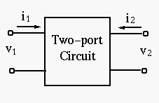

A CE transistor circuit can be modeled by a
two-port network as shown below:

The two-port network is described by the relationship between
two pairs of variables (
)
associated with the input and output ports. Any two of the four
variables can be assumed to be the independent variables, while
the other treated as the dependent variables, the functions of
the independent variables. In general there are
ways to choose any two out of the four
variables. For example, three of these six choices are:
We use the third hybrid model to describe the CE transistor circuit
with
, ,
, and
:
Taking the total derivative of the above, we get:
where
are the hybrid model parameters:
-
: input AC impedance
with (output AC short-circuit). This is the AC
resistance between base and emitter, the reciprocal of the
slope of the current-voltage curve of the input characteristics.
-
: reverse transfer voltage
ratio representing how affects with (input
AC open-circuit). In general is small and can be ignored.
-
: forward transfer current
ratio or current amplification factor with (output AC
short-circuit). Typically, is in the range of 100 to
200.
-
: output admittance,
with (input AC open-circuit). This is the slope of the
current-voltage curve in the output characteristics. In general
is small and can be ignored.
If the variations of the AC components of all these variables
, , and are small (
)
around the DC operating point  and far away from either the cutoff
or the saturation region, the non-linear quantities that describe the
input and output characteristics can be linearized as the following
small signal model:
and far away from either the cutoff
or the saturation region, the non-linear quantities that describe the
input and output characteristics can be linearized as the following
small signal model:
In general, and are small and could be assumed zero to
further simplify the model (right of the figure above) containing
only two components, a resistor
and a current source
.
The base and emitter forms a PN-junction with a resistance
as discussed in the
section of diodes, which is not a
constant, but a function of current  through the PN-junction
between base and emitter. Typically, at room temperature
,
if is approximately in the range of
, then
is a few hundred ohms.
through the PN-junction
between base and emitter. Typically, at room temperature
,
if is approximately in the range of
, then
is a few hundred ohms.
Based on this small signal model, a transistor can be analyzed as a
two-port circuit containing a resistor and a current source
.
In summary, we see that there are two aspects of a transistor circuit:
- The DC operating point in terms of the DC currents ,
 and
and  and voltages
and voltages  and
and  ;
;
- The AC small-signal model by which all of nonlinear voltage-current
relationships associated with the transistor are linearized based
on the assumption that the signal is small and the dynamic range
in totally within the linear region of both the input and output
characteristic plots.
When analyzing the transistor circuit with an AC input signal (riding
on top of a DC input), we need to consider both aspects. If the DC
operating point is set up properly, i.e., in the middle of the linear
region of output characteristic plot, and if the signal is small enough
so that the dynamic range is inside the linear region, then the linear
small-signal model applies and the circuit can be analyzed as a linear
system.